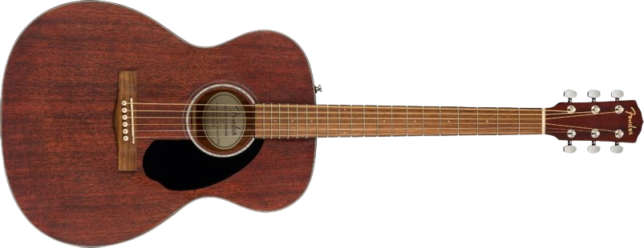

Combinando potentes componentes electrónicos integrados, incluido un sintonizador incorporado, con un excelente tono y facilidad de reproducción, el CD-60S es ideal para jugadores de nivel principiante y intermedio que están listos para enchufar. Cuenta con un cuerpo de corte veneciano para
Compacto y cómodo, el CC-60S es ideal para jugadores principiantes. El cuerpo más pequeño del tamaño de un concierto es fácil de maniobrar en cualquier posición de juego, con una voz articulada que es ideal para tocar los dedos. Su elegante tapa de abeto macizo, su cuello fácil de tocar y sus laterales y fondo de caoba hacen que el CC-60S sea una opción perfecta para la playa, el patio o la cafetería.